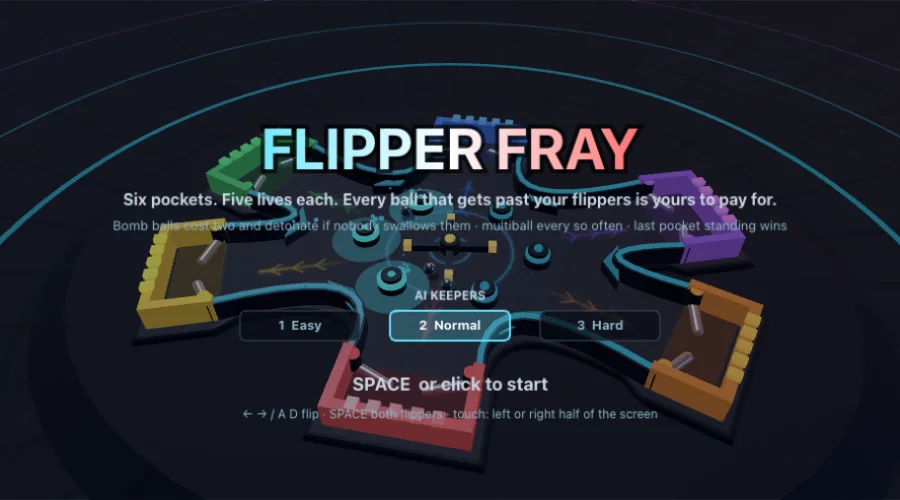

Játék →Teljes játékFlipper Fray
Négyszemélyes flipperbunyó: egy kerek asztal, négy zseb, mindegyiket egy flipperpár őrzi. A pálya domború: minden a középtől kifelé gurul, így minden golyó valakinek a gondja lesz; a bumperek, a csúzlik és a sávoszlopok ide-oda dobálják a golyókat, és minden golyó, amely átjut a flippereiden, egy életedbe kerül — öt élet, az utolsó talpon maradt zseb nyer, vagy a legtöbb élet, ha lejár a három perc. Az alsó zsebet te véded három AI-kapus ellen; a multiball menetrend szerint plusz golyókat dob be, félpercenként pedig kigurul egy bombagolyó — két élet, ha beesik, robbanás, ha senki nem nyeli le. ← → / A D flipperezés, SPACE mindkettő; érintőképernyőn tartsd nyomva a képernyő bal vagy jobb felét. Fizika: a flipperek setVelocityFromTarget-tel hajtott kinematikus testek, így az ütés valódi szögsebességet visz át a golyóba; a golyók bullet-jelölt körök, ezért semmi nem fúródik át a vékony gyűrűfalakon; a bumper- és csúzlilökések, valamint a gólok jóváírása InteractionListener-eken át érkezik. 3D-ben neonaréna krómgolyókkal, világító zsebekkel és sávfényekkel, a saját zsebed mögül nézve.